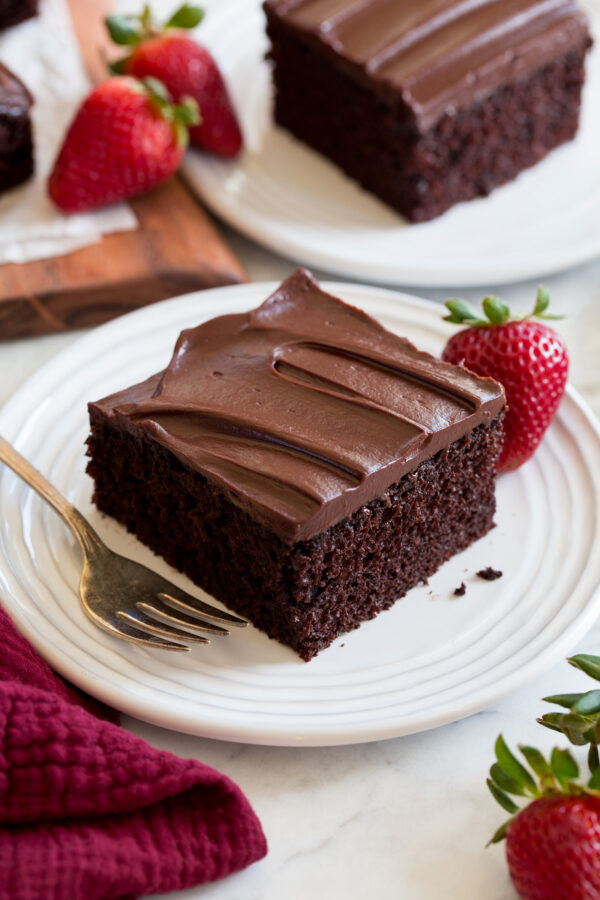

How to Make Easy Chocolate Cake

he easiest Chocolate Cake recipe you’ll ever make and it only needs a few simple ingredients! Plus the cake batter is made in one bowl and no mixer is required.
Ingredients:
- 1 cup (142g) all-purpose flour (scoop and level to measure)
- 1 cup (200g) granulated sugar
- 6 Tbsp (35g) Dutch process cocoa powder, plus more for dusting
- 1/2 tsp baking soda
- 1 cup buttermilk
- 1/2 cup vegetable oil or canola oil
- 2 tsp vanilla extract
- 2 large eggs
- 6 oz. semi-sweet chocolate, finely chopped
- 3/4 cupheavy cream
7 Steps to Make the Easiest Chocolate Cake:
<1i>Preheat oven to 350 degrees.
- Prepare pan: Spray a 9 by 9 or 8 by 8-inch baking dish with non-stick cooking spray then dust with a little cocoa. Shake out excess cocoa.
- Whisk dry ingredients: In a large mixing bowl whisk together flour, sugar, cocoa powder, baking soda, and salt.
- Mix in wet ingredients: Add buttermilk, oil, vanilla and eggs. Whisk mixture until very well blended (about 1 minute).
- Pour batter into prepared baking dish
- Baked in preheated oven until toothpick inserted into the center of cake comes out clean, about 27 to 35 minutes.
- Let cool completely on a wire rack.